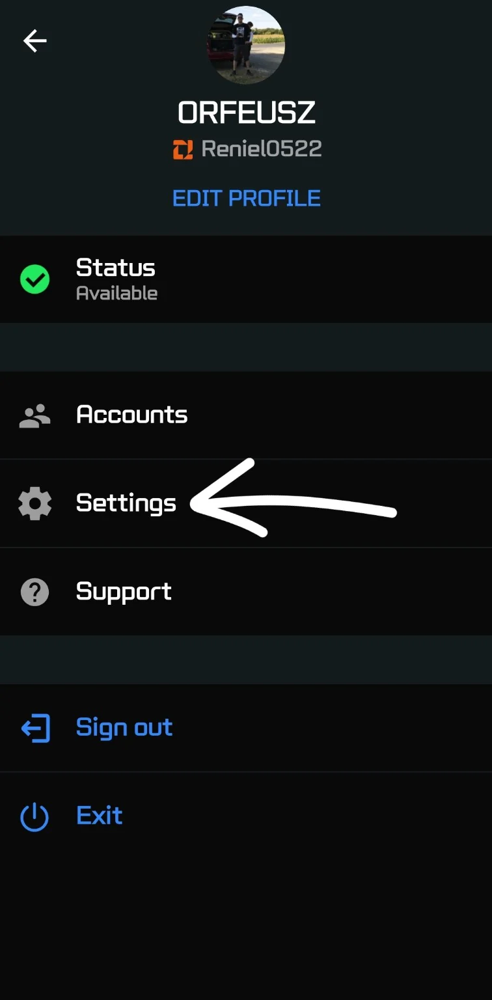
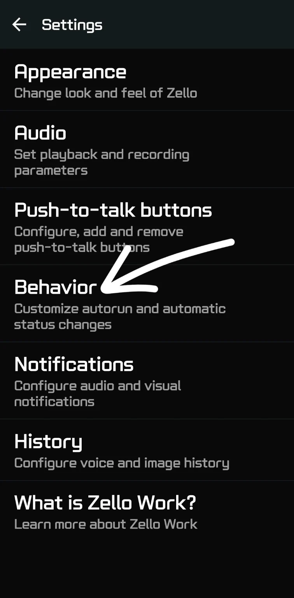
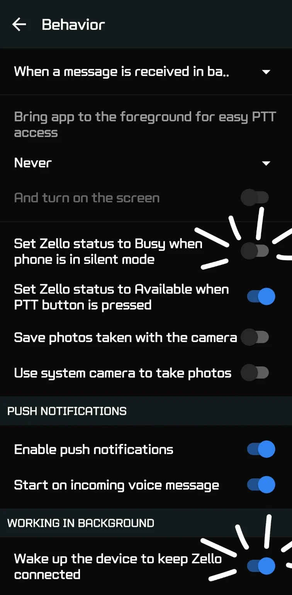
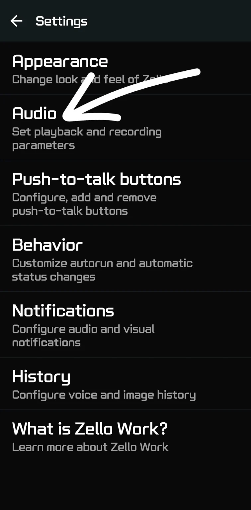
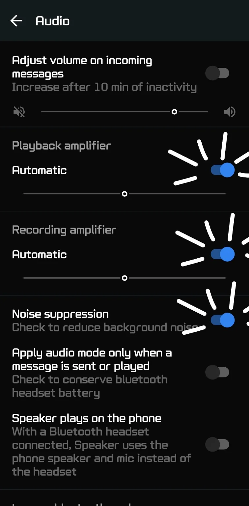

Zello Settings
The screenshots below show the recommended Zello settings prepared for use with Orfeusz Gateway. White arrows and highlights point to the relevant menu items and switches.
Required operating setting: enable Do Not Disturb on the Android device running Orfeusz Gateway and keep it enabled during radio operation. Otherwise, device notification sounds – including message alerts and system sounds – may be transmitted over the radio.
Important: Zello menu names and layout may vary depending on app version, language and device. These screenshots document the example configuration shown.
1. Open the Zello profile
From the Zello home screen, open the profile menu and select Settings.


2. Behavior and background operation
In the illustrated configuration, automatic Zello startup, setting the status to Available when the PTT button is pressed, push notifications and keeping the device awake are enabled. The option that sets Zello to Busy when the phone is in silent mode is disabled.

3. Audio settings
In the example, playback and recording amplifiers are set to Automatic and noise suppression is enabled. The remaining audio options are left as shown in the screenshot.

